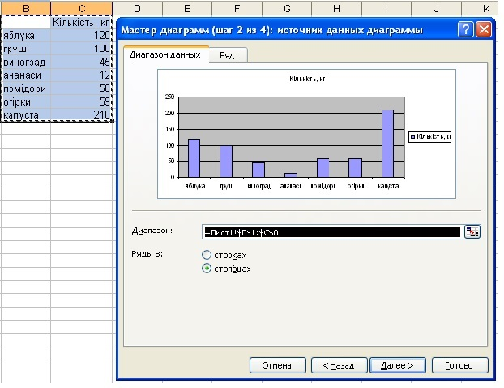
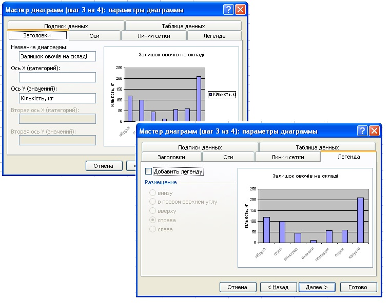
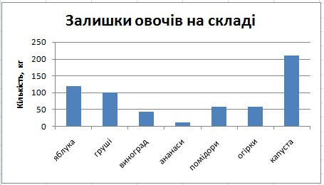

Вправа 4.1. Побудова гістограми
Під час виконання цієї вправи ви побудуєте гістограму наявності продукції на овочевому складі.
- Відкрийте файл Вправа_2_1.xlsx та відразу збережіть його під ім’ям Вправа_4_1.xlsx. видаліть із таблиці зайві дані, залишивши ті, що подані на рис. 4.16.
- Виділіть діапазон клітинок В1:С8.
- Запустіть майстер діаграм, клацнувши кнопку на вкладці Вставлення в групі Діаграми.
- У цьому, першому, вікні виберіть тип діаграми - Гістограма, клацніть кнопку Далі; у наступному вікні вкажіть джерело даних – у стовпцях, клацніть Далі (рис. 4.17).
- У третьому вікні задайте значення решти параметрів діаграми, а саме на вкладці Назва вкажіть назву діаграми та підпис осі Y; на вкладці Легенда змініть прапорець Додати легенду (рис. 4.18). Kлацніть кнопку Далі.
- У четвертому вікні вкажіть місце розташування гістограми – на наявному аркуші. В результаті ви отримаєте діаграму залишків овочів на складі (рис. 4.19).
- Спробуйте змінити значення у таблиці та переконайтеся, що вигляд гістограми також зміниться. Збережіть електронну книгу.

Рис. 4.16. Таблиця наявності продукції на овочевому складі

Рис. 4.17. Встановлення параметрі діаграми у другому вікні майстра діаграм
Рис. 4.17. Встановлення параметрі діаграми у другому вікні майстра діаграм

Рис. 4.18. Встановлення параметрі діаграми у третьому вікні майстра діаграм
Рис. 4.18. Встановлення параметрі діаграми у третьому вікні майстра діаграм

Рис. 4.19. Гістограма наявності продукції на овочевому складі
Рис. 4.19. Гістограма наявності продукції на овочевому складі